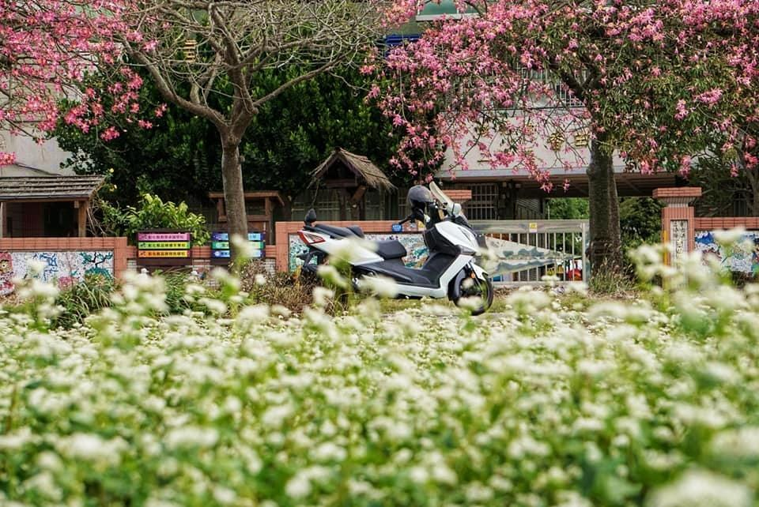
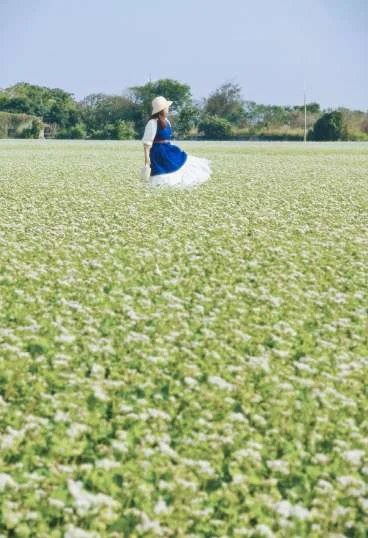

冬｜二林蕎麥花田
不用遠行，也能遇見田野裡的白雪。

看什麼
小巧白花密集盛開，遠望像為農田鋪上一層白雪。花田位置會隨年度耕作與播種安排變化。
從花田到餐桌
把賞花接上手打蕎麥麵體驗，理解蕎麥如何從作物變成食物；活動開放與預約方式須向合作場域確認。
怎麼玩
沿田埂外圍欣賞花海，觀察花形與農作地景。建議停留約30–45分鐘；不走進作物區、不踩踏花田。

照片為來源網站之實景紀錄；花況、供餐與活動以場域最新公告及預約確認為準。
不用遠行，也能遇見田野裡的白雪。

小巧白花密集盛開，遠望像為農田鋪上一層白雪。花田位置會隨年度耕作與播種安排變化。
把賞花接上手打蕎麥麵體驗，理解蕎麥如何從作物變成食物；活動開放與預約方式須向合作場域確認。
沿田埂外圍欣賞花海，觀察花形與農作地景。建議停留約30–45分鐘；不走進作物區、不踩踏花田。
